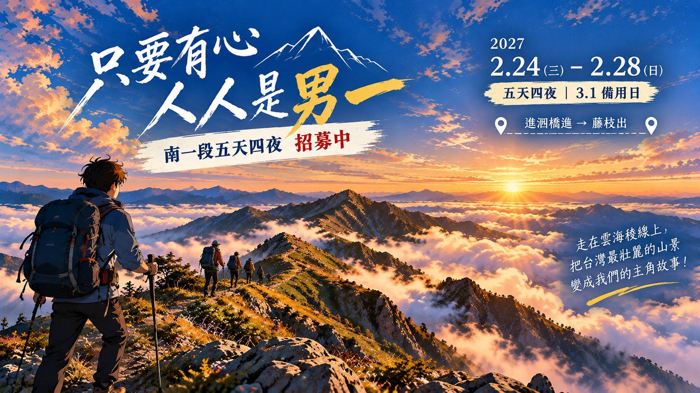

看天池多半沒水，山屋蓄水也常見底。活水靠 2920 鞍（下切約 150 m）、雲馬鞍和三叉下切；三叉下切要 50 分鐘，D4 下午已排進去。

南一段五天四夜，招募中
只要有心
人人是男一
五天四夜・走一段更大的自己
不是每個人都能走這一段，
但只要有心，人人都能成為自己的男一。
中央山脈南一段順走。當天一早從左營搭接駁上南橫，第一晚住庫哈諾辛山屋。時刻以上河 G19 1.0 倍純步程為準，每段並列 2026/3 實走 GPX 的時間與里程，注意事項參考山銘誌南一段影片。
南橫開放日已確認。依最新查詢，南橫梅山口到向陽每週二、週四禁止通行，2/24（三）可以進入。3/1（一）是 228 補假，留作備用日。開放時段與 17:00 前離開管制路段的規定，出發前一週再看一次公路局公告。
路線拓樸示意：位置與線長不按真實比例。雙線是原路往返（D1 庫哈諾辛山、D4 卑南主山）。點任一段可跳到當天。
2026/3 實走 GPX 的高程剖面，橫軸為累計里程。手錶高度與官方標高可能差 20–40 m。點任一段可跳到當天。
馬西巴秀山箭竹是影片裡的「大魔王」，迷路 2–3 次。全線約 1–2 成路徑不明顯，離線 GPX 人手一份。
D3 是 18.4 km 的長稜線；D5 從 3,174 m 下到 1,650 m、累積下降約 2,000 m，GPX 隊伍走了 12 時 18 分。雙杖必備。
五天，一天一頁
沒有前一晚集合；D1 一早從左營出發。點卡片看當天的時刻、撤退判斷、影片提醒和水。
Before the trail
行前與接駁
兩端林道與南橫的狀態是這趟最大的變數，比體能更可能讓行程走不成。下面的事項依時間排列。
五件一定要先確認的事
- 南橫開放日 梅山口至向陽目前週二、週四封閉，2/24（三）可以進入。D1 約 10:45 過梅山口，要在開放時段內。出發前一週再確認開放時段，以及 17:00 前要離開管制路段的規定。
- 藤枝 18K 屏東分署林道頁記載 18K 路基崩坍、設管制門、禁止人車通行（2026/10/2 巡查）。要問清楚登山者從特生中心下來能否通過，以及有沒有業者接駁到特生中心。
屏東分署 08-723-6941 六龜工作站 07-689-1002 - 藤枝森林遊樂區 目前封園。出口實際在特生中心旁的南一段登山口。影片隊伍的接駁車開到特生中心，要確認現在還上得去。
- 庫哈諾辛山屋床位 入園申請時一起抽；沒抽到就在叉路營地紮營。
- D5 路線 依上河路線：三岔 → 新舊路岔 → 石山東鞍 → 石山 → 石山西鞍 → 特生中心。2026/3 GPX 走的就是這條，溪南山走林道腰繞。
時程
- 12 月中 查南橫開放規則、藤枝 18K 管制，敲定日期；預約兩端接駁（左營→進涇橋、特生中心→六龜或左營）。
- 1 月 申請入園（玉山國家公園）與入山（桃源區山地管制區），D1 一併抽庫哈諾辛山屋床位。申請時程以系統公告為準。
- 出發前 3 天 Windy（ECMWF）＋氣象署山區預報看 48–72 小時，決定照走或延期。
- 出發前一晚 登山保險、身分證、離線軌跡與地圖、留守人通報時間與延遲流程。
水源一覽（順走）
| 地點 | 水源 | 怎麼用 |
|---|---|---|
| 進涇橋 | 溪水 | D1 背到隔天 2920 的量 |
| 3026 山屋 | 蓄水桶 | 乾季常見底，不要依賴 |
| 2920 鞍 | 活水，下切約 150 m | D2 下午取水，D3 出發背約 3 L |
| 海諾南南鞍 | 看天池 | 乾季不穩，不列入計畫 |
| 雲水池 | 看天池 | 有水是運氣，不列入計畫 |
| 雲馬鞍 | 活水，下切溪溝 12–15 分 | D3 晚取水；D4 出發裝足白天的量，多背 1 L 備用 |
| 三叉營地 | 看天池＋下切活水 | 下切約 20 分、回程約 30 分；D4 下午取水 |
| D5 沿途 | 不確定 | 從三叉背足 D5 一天的量 |
裝備重點
- 綁腿、長袖、手套 刺柏與箭竹。
- 雙杖 D5 從 3,174 m 下到 1,650 m，最後是急降捷徑。
- 輕冰爪 2920、三叉營地清晨可能結霜。
- 水容量至少 5 L D3 從 2920 出發、D5 從三叉出發，都要背一整天的水。
- 頭燈與備用電池 D3、D4 都是摸黑出發。
- 衛星通訊器 D3 之後幾乎沒有手機訊號，影片隊伍用衛星訊息向留守人回報。
- 高山症藥物 依個人醫囑；第一晚睡 3,026 m，第二天上 3,668 m。
數據怎麼讀
- 距離與爬升／下降取自 GPX：每段從上一個在 GPX 上定得到位置的節點算起；高度先平滑再累計（手錶氣壓高度），累積爬升下降可能有 ±10% 的誤差。上河圖沒有這些數字。
- 左欄時刻以上河 G19 1.0 倍純步程為準，從每天出發時間連續累加，不含休息；實際抵達要自己加休息時間。
- 對照用的 GPX 是 2026/3/20–3/24 的南一段五天實走紀錄（含休息，總長 62.7 km）。那隊 D2 推到海諾南山南鞍、D3 停雲馬鞍，日期切法和本行程不同，表上已換算成本行程的段落。
- 山銘誌影片隊伍最後一晚紮石山東鞍營地，所以影片最後一天只有約 6 小時；本行程 D5 從三叉出發，要多走約 4 時 45 分（上河）。
- 里程與高度剖面取自 GPX；上河 G19 公開圖只有分鐘、沒有分段里程。
- 標高以節點名稱（3026、3444、2920、3237）和查得的登山紀錄為準；未查到的節點標「未標」，不推估。
撤退路線
- D2 12:00 未到關山：退回山屋，整趟延一天，用 3/1 備用日。
- D3 小關山四岔路口可經凹谷營地下小關山林道，但林道車輛管制狀況要事先確認，否則下山後還要走很長的林道。
- D4 之後 往前出藤枝比往回走近，以出藤枝為主。
來源
路況、水況和管制都會變動；本頁以 2026/10/28 查得的資料為版本日期。
時間為上河 G19 1.0 倍純步行推算，不含休息與拍照；取水時間已列出。實際依天氣、路況與隊伍腳程調整。
高度剖面為 2026/3 實走 GPX，手錶高度與官方標高可能有落差。
2026 年 10 月版（五天四夜，上河 1.0 為準，對照 2026/3 GPX 與山銘誌影片）